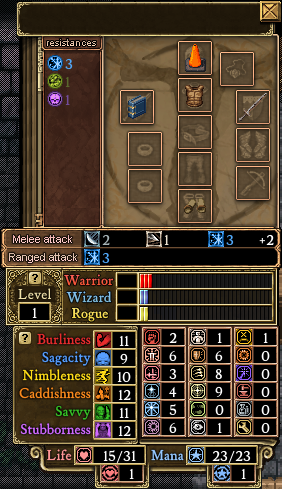
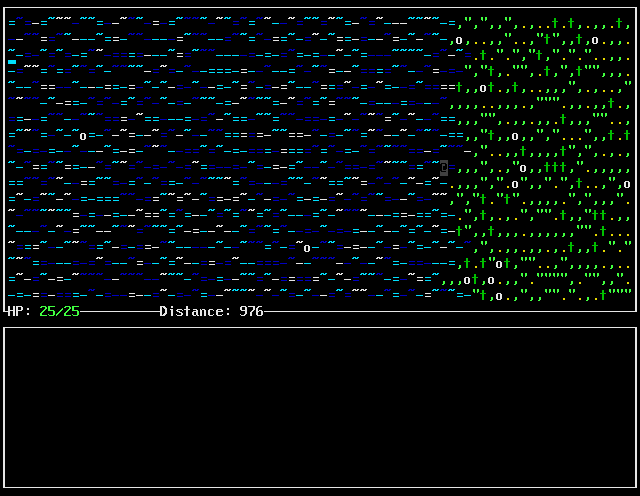
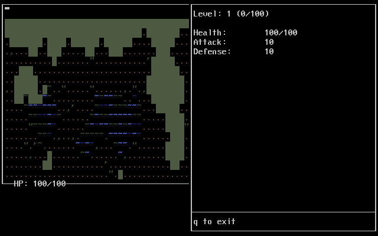
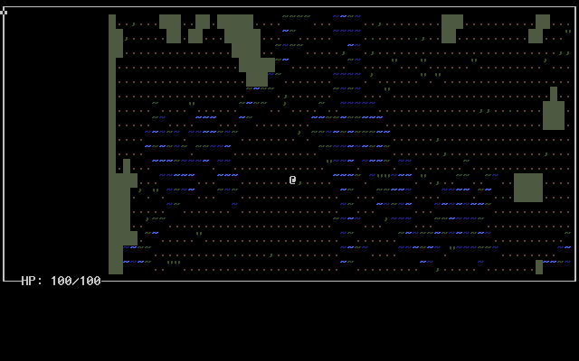

In the previous segment, we looked at the process of designing and implementing a level. This time, we'll be putting that aside for a while to cover an important aspect of many roguelikes: Stats. Stats may not the most glorious or exciting of topics, but representing characters and objects with numbers is an integral part of many games. For this reason we'll be giving our character some stats, and creating items and equipment to modify those stats.
Having likely played videogames before, I'm sure you know what stats are. However, to make sure that we're all on the same page I'm going to give my own definition:
Stats are the numerical representation of an object's capabilities.
That object could be a character, a sword, a magical potion, or simply a lever that resets itself after a while. As long as the numbers represent what the object does, or can do, they're stats. What stats you actually use in your roguelike can vary wildly depending on the scope of the mechanics that you've chosen. Some roguelikes track almost nothing, and then you have cases like Dungeons of Dredmor:
Thankfully, adding stats to something in code is about as straightforward as just adding the necessary values to its struct. In the case of this tutorial, I'll be keeping the stats (and by extension, the eventual combat mechanics) simple and minimal, so the resulting actor struct looks like this:
6 typedef struct actor { 7 uint8_t character; 8 point position; 9 int color_pair; 10 11 uint16_t level; 12 uint16_t xp; 13 uint16_t hp; 14 uint16_t hp_max; 15 uint16_t attack; 16 uint16_t defense; 17 } actor;
How quick! Of course, I wouldn't end a tutorial segment so quickly. Stats are all well and good, but the player won't understand the stats in your game unless present them somehow. To that end, let's add a UI to our game.
Like many aspects of roguelikes, there's really no hard and fast rule about how your UI should look and act. As an example, I'll be recreating the UI from To the West, which should give a nice example to use as a jumping-off point. For reference, this is what the game's UI looks like:
Before we build our UI, we need to cover two new curses features: Windows and Panels. Windows are a way to organize our draws in a more manageable format. Each window has its own coordinates, so drawing to the position 0,0 in a window will draw to that window's upper-left corner rather than the screen's. Windows can also be redrawn separately.
To manage windows, curses provides a few functions. Here are the ones you'll probably need to care about:
With these functions in hand, you can create windows to your heart's content. In addition, as I pointed out back in part 2, the 'w' prefix is available on many functions in order to target a particular window. For instance, mvaddch() draws a character at a given position, but mvwaddch also lets you specify a window.
Windows do come with one serious restriction: They can't overlap nicely. It's possible to split up an area with windows, but as soon as they overlap it becomes difficult to control what gets drawn "on top". For this reason, the panel extension to curses was created. By creating panels and attaching windows to them, window ordering and drawing can be easily managed. Rather than explaining in a more in-depth fashion, let's step through an example:
This image was created with the following code:
88 WINDOW* window_1 = newwin(20, 20, 0, 0); 89 PANEL* panel_1 = new_panel(window_1); 90 WINDOW* window_2 = newwin(20, 10, 4, 6); 91 PANEL* panel_2 = new_panel(window_2); 92 top_panel(panel_1); 93 box(window_1, 0, 0); 94 box(window_2, 0, 0); 95 update_panels(); 96 doupdate(); 97 98 getch(); 99 100 del_panel(panel_1); 101 del_panel(panel_2); 102 delwin(window_1); 103 delwin(window_2);
We start by creating our windows and panels. By calling new_panel(win), we create a new panel with the provided window attached. By default, this new panel is placed on top of all the others, so after these calls our panels are ordered like so:
By using the top_panel(panel) function, we move the panel containing window_1 to the top. In our case, this reverses the order. However, this order won't apply to the screen until we call update_panels() later in this example. After that, the windows are given borders to draw via the box(win, v, h) function. This function draws a border around the given window, and accepts characters to use for the lines. If you leave the values at 0, you get a nice default box that works well for text UIs, which is what I used in To the West.
This alone won't be enough to display anything onscreen, however. Unlike drawing to the screen directly, drawing to a window doesn't display anything. There are several functions to make one or more windows appear, but this case I used update_panels() followed by doupdate().
There's not much to say about del_panel(panel) and delwin(win), besides a reminder to call them for each window/panel pair when your done with it.
Now that the long explanation is over, let's use our newfound knowledge to recreate To the West's UI. If you haven't already, you'll want to update the drawing functions to draw to a provided window. Once that's done, we can begin by finishing up the map window. As you saw earlier, the frame around the map can be easily replicated by calling box(win, v, h) after drawing the map.
The last piece of the puzzle is the HP (or anything else you want to add) counter, which requires another small callback to part 2. If you recall the first code sample, we used a function called printw(format, ...) to display a message on screen. This function is the curses equivalent to printf, so we can draw a health indicator quite easily with it:
mvwprintw(window, line, column, "%d/%d", player.hp, player.hp_max);
Bringing it all together, here's the code that draws the map and health indicator:
13 void draw_game() { 14 wclear(map_window); 15 map_draw(map_window, game_map, player); 16 actor_draw(map_window, player, game_map, player); 17 box(map_window, 0, 0); 18 wmove(map_window, player->position.line, player->position.column); // Place the cursor on the player 19 20 mvwprintw(map_window, 19, 3, "HP: %d/%d", player->hp, player->hp_max); 21 22 update_panels(); 23 doupdate(); 24 }
Now that the indicators on the map window are done, let's give the player a simple way to review their stats. To do that, we're going to use a little trick that I like. You see, one of the most interesting differences between most curses games and regular non text-based games (in my opinion) is that rather than looping at a set rate, the games wait for player input on each iteration of the main loop instead. This means that the games typically have little to no concept of change over time or motion. As a result, you can create a function that builds a window, runs a special input/drawing loop just for it, then cleans up and returns to the main loop. This simplifies the process of creating and handling new windows, and as a result you can make a simple function like this:
41 void stats_panel(actor* a) { 42 WINDOW* stats_window = newwin(25, 40, 0, 40); 43 PANEL* stats_panel = new_panel(stats_window); 44 45 top_panel(stats_panel); 46 47 do { 48 wclear(stats_window); 49 box(stats_window, 0, 0); 50 51 mvwaddch(stats_window, 22, 0, 195); 52 for(int i = 1; i < 39; ++i) 53 mvwaddch(stats_window, 22, i, 196); 54 mvwaddch(stats_window, 22, 39, 180); 55 mvwaddstr(stats_window, 23, 1, "q to exit"); 56 57 mvwprintw(stats_window, 1, 1, "Level:\t%u (%u/%u)", a->level, a->xp, 100); 58 mvwprintw(stats_window, 3, 1, "Health:\t%u/%u", a->hp, a->hp_max); 59 mvwprintw(stats_window, 4, 1, "Attack:\t%u", a->attack); 60 mvwprintw(stats_window, 5, 1, "Defense:\t%u", a->defense); 61 62 update_panels(); 63 doupdate(); 64 } while(getch() != 'q'); 65 66 del_panel(stats_panel); 67 delwin(stats_window); 68 }
That handles all the necessary logic for a window like this:
Next, let's make an inventory. To do that, we'll need to give the player some items. There are a number of ways to handle items depending on what you're aiming to do, so I'll show you a fairly generic way to implement them.
Items in roguelikes can often do quite a bit, which can make them tricky. The main source of complexity is the fact that items can often have a number of different triggers for their effects. Just look at a game like Nethack, and you'll quickly realize that there are items that have effects when you:
We're not going to make an item system that complex or robust. However, we can easily make items react to a few different verbs, which should be enough to get you started on your own game. Let's start with a very basic struct:
1 #ifndef ITEM_H 2 #define ITEM_H 3 #include <inttypes.h> 4 5 typedef struct item { 6 char* name; 7 uint8_t character; 8 int color_pair; 9 10 uint16_t count; 11 } item; 12 13 #endif
We'll add more to this later. For now, let's get some items in a map. Personally, I find the easiest way to handle items in a map to be via the tiles. This is the main reason why our item struct doesn't need a position: It will always be kept inside a container of some kind, such as a tile or actor. We also need functions to add/remove items in a tile. I've written a very simple resizing container for this purpose, which also auto-stacks items of the same type. It requires a simple addition to the tile struct:
7 typedef struct tile { 8 uint8_t character; 9 int color_pair; 10 bool solid; 11 12 uint16_t item_count; 13 uint16_t item_slots; 14 item** item_list; 15 } tile;
...And the following two functions:
362 void place_item(tile* t, item* it) { 363 // Check for an identical item. If it exists, combine stacks and return. 364 for(int i = 0; i < t->item_count; ++i) { 365 if(!strcmp(t->item_list[i]->name, it->name)) { 366 t->item_list[i]->count += it->count; 367 free(it); 368 return; 369 } 370 } 371 372 // If there's no more room for items, resize the container 373 if(t->item_count >= t->item_slots) { 374 t->item_slots *= 2; 375 t->item_list = realloc(t->item_list, t->item_slots * sizeof(item*)); 376 } 377 378 // Place the item in the list 379 t->item_list[t->item_count] = it; 380 t->item_count++; 381 } 382 item* take_item(tile* t, uint16_t index) { 383 if(t->item_count > index) { 384 item* it = t->item_list[index]; 385 386 // Shift the items backwards. There are faster methods of filling 387 // space, but we want to preserve the list's order for the player's sake. 388 for(int i = index + 1; i < t->item_count; ++i) 389 t->item_list[i - 1] = t->item_list[i]; 390 391 t->item_count--; 392 393 return it; 394 } 395 396 return NULL; 397 }
With those two functions, tiles can now hold items. Next, some actual items need to be made. The best way to spawn many custom game elements, such as items and NPCs, is to load them from data files. However, that could be a couple segments on its own so we'll be doing something simpler. For every item in our game, we can make a simple creation function that takes in the number of items to make. How you implement these functions is up to you, but I like having a const "template" copy of each item, and copying it with memcpy.
Next up is drawing. This is quite simple, requiring only an extra if-statement when drawing a tile:
348 if(m->data[i][j].item_count == 0) { 349 wcolor_set(win, m->data[i][j].color_pair, NULL); 350 mvwaddch(win, i - offset_y, j - offset_x, m->data[i][j].character); 351 } else { 352 item* it = m->data[i][j].item_list[m->data[i][j].item_count - 1]; 353 wcolor_set(win, it->color_pair, NULL); 354 mvwaddch(win, i - offset_y, j - offset_x, it->character); 355 }
The last addition that we need before we move on is giving the player an inventory. This gives us a convenient little excuse to refactor, by making tiles and actors use the same code for item handling. To do this, we can simply move the additions to the tile struct into a separate inventory struct, update the functions to take an inventory, then put an inventory into both the tile and player struct. In addition to making our code simpler, it also opens up the possibility of putting inventories on other objects, such as chests.
We now have items and an inventory, but the player still can't pick them up or use them. To solve this problem, we're going to use the same technique as we used for the stats panel to create an inventory viewer/item selector panel. Unlike the stats panel, however, there are two complications to deal with: selecting items, and scrolling a potentially long list.
The former issue isn't hard to solve. Because our inventory is in its own separate loop, we can add controls for moving a cursor and selecting an item. The cursor itself can just be a number that points to a slot in the item list, and when we draw each item we can simply highlight it however we like if its number matches the cursor value. To make the function work as a selection, we can just return the cursor value (which can then be used in take_item) at the end. If we allow negative cursor values, we can even return -1 to signify "cancelled" if we please.
Scrolling is a little bit tougher. First of all, you need a second 'cursor value' to track the position of the scroll. Then, you need to use that value as a starting point when drawing the list of items. The resulting list, with a little bit of extra flair, looks like this:
And as always, here's the code:
43 int32_t inventory_panel(uint8_t can_default, inventory* inv) { 44 if(can_default) { 45 if(inv->item_count == 0) 46 return -1; 47 else if(inv->item_count == 1) 48 return 0; 49 } 50 int32_t it = -1; 51 uint8_t done = FALSE; 52 WINDOW* inventory_window = newwin(25, 40, 0, 40); 53 PANEL* inventory_panel = new_panel(inventory_window); 54 uint16_t scroll_position = 0; 55 uint16_t cursor_position = 0; 56 57 top_panel(inventory_panel); 58 59 while(!done) { 60 wclear(inventory_window); 61 box(inventory_window, 0, 0); 62 63 mvwaddch(inventory_window, 22, 0, 195); 64 for(int i = 1; i < 39; ++i) 65 mvwaddch(inventory_window, 22, i, 196); 66 mvwaddch(inventory_window, 22, 39, 180); 67 mvwaddstr(inventory_window, 23, 1, "ENTER to select, q to exit"); 68 69 if(scroll_position > 0) 70 mvwaddstr(inventory_window, 0, 16, "^ More ^"); 71 if(scroll_position + 21 < inv->item_count) 72 mvwaddstr(inventory_window, 22, 16, "v More v"); 73 74 for(int i = scroll_position; i < inv->item_count && i < scroll_position + 21; ++i) { 75 if(i == cursor_position) 76 wattron(inventory_window, A_STANDOUT); 77 mvwprintw(inventory_window, i + 1 - scroll_position, 1, "%2d %s", inv->item_list[i]->count, inv->item_list[i]->name); 78 if(i == cursor_position) 79 wattroff(inventory_window, A_STANDOUT); 80 } 81 82 update_panels(); 83 doupdate(); 84 85 switch(getch()) { 86 case 'q': 87 done = TRUE; 88 break; 89 case '\n': 90 it = cursor_position; 91 done = TRUE; 92 break; 93 case KEY_UP: 94 if(cursor_position > 0) { 95 cursor_position--; 96 if(cursor_position < scroll_position) 97 scroll_position--; 98 } 99 break; 100 case KEY_DOWN: 101 if(cursor_position < inv->item_count - 1) { 102 cursor_position++; 103 if(cursor_position >= scroll_position + 21) 104 scroll_position++; 105 } 106 break; 107 } 108 } 109 110 del_panel(inventory_panel); 111 delwin(inventory_window); 112 113 return it; 114 }
Now, we've got almost all of the elements we need. We can create items, and place them on tiles. We have an item picker, for grabbing items and selecting them in the inventory. The last piece of the puzzle is making the items work. As I already mentioned, we'll mostly be glossing over this part with a simple example, and you cn expand it as you need. The general idea of getting items to do things is simply giving them basic callbacks to work with. This would be a pretty good opportunity for more data-driven files/scripting, but since we can't do that we'll use good old fashioned function pointers. The format for callbacks that I personally like is this:
15 typedef uint8_t (*item_callback)(item* i, actor* target);
This function takes in an item, a target to potentially apply an effect to, and returns whether or not to remove the item from its container. This format works for about 90% of cases, since there's typically only one target involved. Things get a little bit weird in a few edge cases (such as striking an enemy with an item), but otherwise this format can cover a number of interactions. Now that we've defined a function to work with, let's actually put it to use. For this example, I'll be giving items two callbacks: One for being used, and one for being stepped on. We'll also give inventories a new function:
42 void item_run_callback(inventory* inv, uint16_t index, actor* a, item_callback c) { 43 if(inv->item_count > index && c != NULL) { 44 if(c(inv->item_list[index], a)) { 45 take_item(inv, index); 46 } 47 } 48 }
Simple, right? That simplicity hides some nice tricks, however. This little setup lets us do a variety of things, such as:
For any other use cases, we can also add a user pointer to our callback as a catch-all means of providing data. Now, let's make those callbacks work. The use callback is quite simple, since we already need a way to pull up the player's inventory panel. All we do is map the panel function to a key, take the item that's returned, and call the new callback function with it. For the step callback, we're going to need to add some extra actor code. Back in part 3, we had our movement code in the input handling part of the game. At this point, it makes sense to move it into its own function, where we can also call step callbacks on items:
41 uint8_t actor_try_move(actor* a, map* m, point offset) { 42 tile* t = get_tile(m, point_add(a->position, offset)); 43 if(t != NULL && !t->solid) { 44 a->position = point_add(a->position, offset); 45 for(uint16_t i = 0; i < t->inv.item_count; ++i) { 46 item_run_callback(&(t->inv), i, a, t->inv.item_list[i]->on_step); 47 } 48 49 return TRUE; 50 } 51 52 return FALSE; 53 }
And now, we have a working item system.
This is starting to get long, but we've almost finished the entire UI. The only remaining part is a message log. Message logs are helpful for a variety of reasons. Not only do they give the player a way to review what happened recently, they also give concrete feedback for their actions. In a game that wasn't text-based, you might be able to use a compination of animations and audio cues, but here text is our primary medium for communication. Thus, a message log is highly important for conveying events to the player. If you look at the screenshot of To The West above, you'll spot a long rectangle underneath the map. That's where the log will go. However...
If you've been following along at home with anything similar to what I've been using, you'll probably be running very low on space right around now. Unlike ncurses, or other variants that run in a terminal, pdcurses (in some modes) manages its own window, which starts out pretty small. Thankfully, the developers gave us a way to make the window match the size that we want, using environment variables. For the uninitiated, environment variables are variables that are provided by, well, the environment. This usually means the shell that launched your program. The <stdlib.h> header gives us a functiopn called putenv(str) that we can use to set these variables. To resize your pdcurses window, you can simply add a couple of lines like this before your initscr() call:
32 putenv("PDC_COLS=80"); 33 putenv("PDC_LINES=30");
Perfect. Now, back to the log.
I'm not going to bore you with the details of creating and destroying the log. We've done this with other windows a few times now, so I'm sure you've already gotten the hang of it. Likewise, the actual entries themselves are just an array of char*s, which you can handle as well. Instead, I'm going to discuss the actual process of writing messages to the log.
At first adding messages might seem easy: Just take a string and toss it on the pile. If you actually do that, however, you'll soon realize that there's more to this than meets the eye. A system like this only allows you to write a string to the log, which severly limits what you can do. For instance, say the player strikes a goblin. Not only can we not easily tell the player how much damage they did, we can't even tell them that what they hit was a goblin! For this, we'd either need to write a bunch of concatenation or formatting code for our string before delivery, which simply isn't convenient to do on a regular basis. Instead, we're going to make our log writing function variadic, giving us the freedom of writing printf-like messages directly to our log. Let's step though some code:
29 void log_write(const char* fmt, ...) {
As you can see, this is a pretty straightforward variadic function. Indeed, it looks quite similar to the C's printf functions, and will indeed handle arguments similarly.
30 if(text[99] != NULL) 31 free(text[99]); 32 for(int i = 99; i > 0; --i) 33 text[i] = text[i - 1];
First off, we have some message log boilerplate to "scroll" the contents of the log, leaving one open space at the start for the new message. This scrolling is slower than it needs to be (one faster way to handle scrolling would be to move a cursor rather than shifting the contents of the list), but is written to be straightforward and easy to understand.
35 va_list args; 36 va_start(args, fmt);
Next, we need to get our variadic arguments. In this case, we only need the va_list, since we'll be passing it on. If you haven't written a variadic function before, this is a good opportunity to play around and learn.
37 uint16_t len = vsnprintf(NULL, 0, fmt, args); 38 va_end(args); 39 va_start(args, fmt);
Once we have the va_list, we use a handy snprintf trick to get the final string length. Basically, the printf family of functions return the number of bytes printed. However, the *nprintf functions are an exception: They print out the length of the result, not the length that they are told to output. This means that we can call snprintf on a null pointer, with a length of 0, and all it will do is return the final string length. This is a super-important trick that I use for pretty much all logging and string formatting across all of my games, because it lets you create a string without making any assumptions about the length.
40 text[0] = calloc(len + 1, sizeof(char)); 41 vsnprintf(text[0], len + 1, fmt, args); 42 va_end(args); 43 }
Finally, we allocate our final string and print to it. Note that we need to add 1 to the length that snprintf returned, because the returned length doesn't include a null terminator. Another thing to bear in mind is that we don't need to explicitly set the final char as a null terminator. Unlike malloc, calloc zeroes-out the memory that it creates, so our final byte is null by default.
With this function complete, we now have a list of logged strings, and writing log entries to the window is as simple as calling mvwaddstr a few times. I recommend taking a few minutes to add logging calls for the player's less visible actions, such as stepping on, picking up, and using items. Once that's done, you'll have a fully functioning UI and item system in your game. Next time, we'll continue to flesh out the mechanics by adding some monsters!
To download the code as of this part, click here.